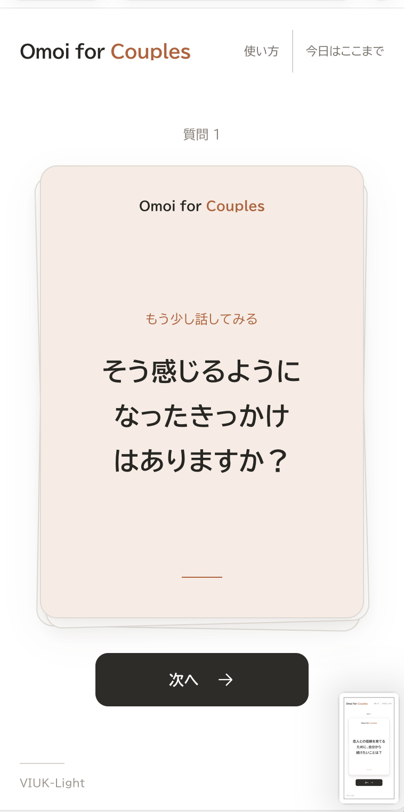
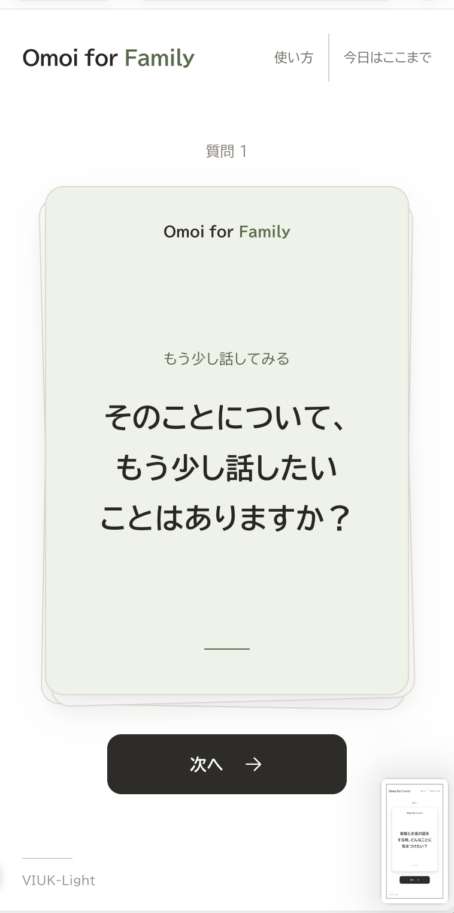
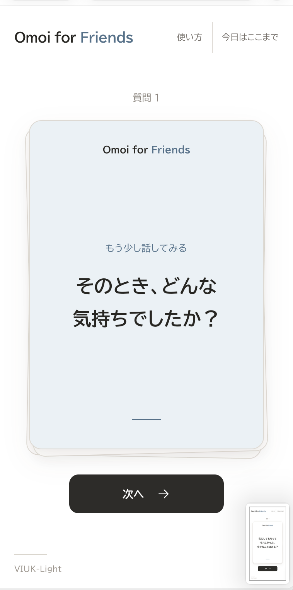
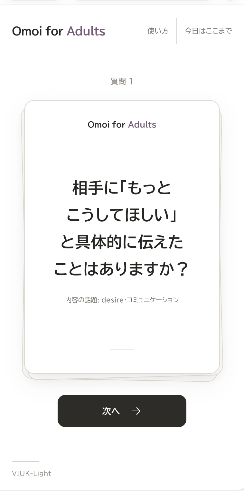
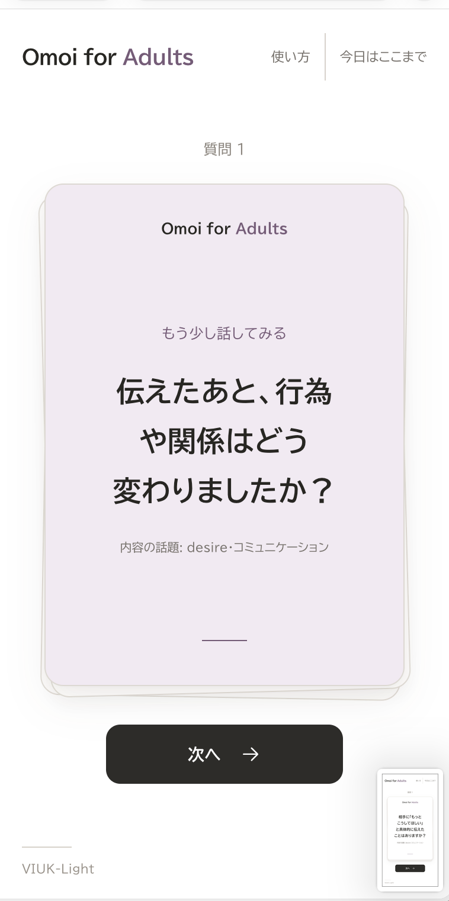
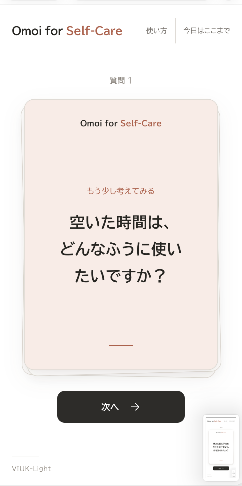

Omoi for
Series
「Omoi」を、伝えあおう。
恋人、家族、友達、そして自分自身。
質問をきっかけに、相手のことも、自分のことも、もっと知る。
あなたに合ったシリーズを選ぶ










Omoi for
Self-Care
自分の「Omoi」に、
耳を傾ける。
日々の気持ちを振り返り、自分にとって大切なことを考える、ひとり向けのシリーズです。
64問



主質問は5シリーズで706問。2026年10月17日に公開版を確認しています。裏面の追加の問いは、この件数に含めていません。
Omoiとの違い
Omoi for Seriesは、相手との会話やひとりでの振り返りを、質問カードから始めるWebシリーズです。
既存のOmoiとは、実装・質問データ・内部のLevel定義が異なります。画面ではLite / Deepと通常 / 深掘りを選びます。
設計を詳しく見る質問の内容と、
進め方を選ぶ。
Lite / Deepは質問の踏み込み度、通常 / 深掘りは追加の問いの表示方法です。ふたつを別々に選べます。
気軽な問いにも、もう一つの視点を。
カードの動きのイメージ
Lite・深掘り / 表面
3ステップで始める
- 01シリーズを選ぶ
話す相手や、ひとりで振り返る目的に合ったシリーズを選びます。
- 02内容と進め方を選ぶ
Lite / Deepで質問の踏み込み度を、通常 / 深掘りで追加の問いの表示を選びます。
- 03カードを一枚ずつ進める
「次へ」で進みます。答えずに進むことも、「今日はここまで」で終えることもできます。
利用前に確認すること
Adultsは18歳以上向けです。Deepで開始・再開するときは、内容の案内が表示されます。「続ける」で開始し、「戻る」で設定画面へ戻れます。相手との会話では、お互いの境界と同意を尊重してください。
Self-Careは医療的な診断・治療や心理状態の評価を行いません。回答の入力・送信・保存機能はなく、設定と進行はページ内で扱います。
安全な使い方とデータの扱いを見る